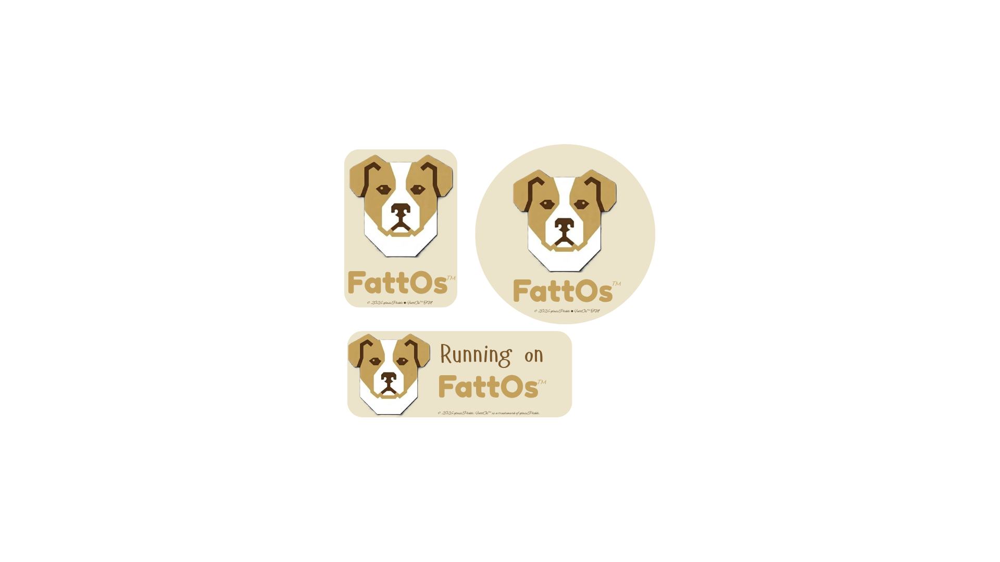
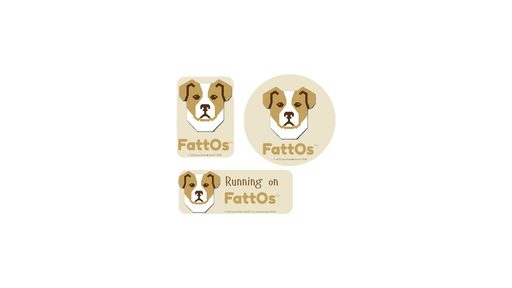

The Native Operating System for Microcontrollers & Physical AI
Please note how repository files are organized:
os/kernel/, os/robot/, os/ai/, os/platform/, and public headers in os/include/fattos/) live inside this os/ folder.
index.html, docs.html), the docs/ guides, and project README.md.
FattOs brings a complete, native operating system to microcontrollers — enabling autonomous physical machines, smart devices, and robotics to run entirely on single low-cost chips without heavy coprocessors or tethered cloud computing.
By unifying hard real-time safety loops, deterministic motor control, and local INT8 machine learning in an ultra-compact footprint, FattOs gives microcontrollers the native power to perceive, decide, and move instantly.
Power complete autonomous devices directly on a single microcontroller. Execute drive trains, sensor fusion, and navigation loops on-chip — no Linux single-board computers needed.
Native execution pipelines for INT8 neural networks, vision perception models, and occupancy grids — optimised directly for MCU vector instructions and dual-core execution.
Built natively for ESP32-S3 (Xtensa dual-core), STM32F4 (Cortex-M4), and STM32F7+ (Cortex-M7) — offering consistent, zero-overhead scheduling across architectures.
Zero dynamic memory heap allocation eliminates runtime crashes and memory fragmentation. Engineered so cleanly that developers and AI agents default to writing bug-free code.


The first release of FattOs is now live and available in the GitHub repository. Get the C11 source code, read the documentation, and run autonomous physical intelligence directly on microcontroller silicon.
FattOs Pre-Release
Pre-release is live in the GitHub repo! You can download the code or explore docs.